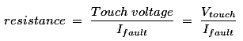
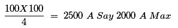
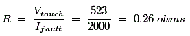
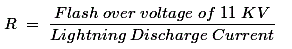

Necessity of Equipment Earthing
Classification of Earthing
Permissible Values of Earth Resistance
What is the Basics for arriving at Permissible Earth Resistances?
Type of Earthing
Plate Type Earthing
Pipe Type Earthing
What is Earthing?
Equipment earthing is a connection done through a metal link between the body of any electrical appliance, or neutral point, as the case may be, to the deeper ground soil. The metal link is normally of MS flat, CI flat, GI wire which should be penetrated to the ground earth grid.
Equipment earthing based on IS:3043-1987 Standard
- Classification of electrical equipment IS: 9409-1980
- Important rules for safety and earthing practice is based on IE rules 1956
- Guide on effects of electric current passing through human body – IS:8437-1997
- Protection of buildings and structures from lightning – IS:2309-1969
- Earth: The conductive mass of the earth, whose electric potential at any point is conventionally assumed and taken as ZERO.
- Earth electrode: A Conductor or group of conductors in intimate contact with and providing as electrical connection to earth.
- Earth electrode resistance: The electrical resistance of an earth electrode to the general mass of earth.
- Earthing Conductor: A protective conductor connecting the main earthing terminal to an earth electrode or other means of earthing.
- Equipotential Bonding: Electrical connection putting various exposed conductive parts and extraneous conductive parts at a substantially equal potential.
- Example: Inter connect protective conductor, earth continuity conductors and risers of AC/HV systems if any.
- Potential gradient: The potential difference per unit length measured in the direction in which it is max.
- Touch Voltage: The P.D. between a grounded metallic structure and a point on the earth’s surface separated by a horizontal reach of one Metre.
- Step voltage: The P.D. between two points on the earth’s surface separated by a distance one pace (step) assumed to be one Metre.
- Earth grid: A System of grounding electrodes consisting of interconnected connectors buried in the earth to provide a common ground fro electrical devices and metallic structures.
- Earth mat: A grounding system formed by a grid of horizontally buried conductors - Serves to dissipate the earth fault electric current to earth and also as an equipotential bonding conductor system.
Necessity of Equipment Earthing
Protection
(a) Safety of personnel
(b) Safety of equipment
Prevent or at least minimize damage to equipment as a result of flow of heavy electric currents.
(c) Improvement of the reliability of the power system.
Classification of Earthing
The earthing is broadly divided as
a) System earthing (Connection between part of plant in an operating system like LV neutral of a power transformer winding) and earth.
b) Equipment earthing (safety grounding) connecting bodies of equipment (like electric motor body, transformer tank, switchgear box, operating rods of air break switches, LV breaker body, HV breaker body, feeder breaker bodies etc) to earth.
Permissible Values of Earth Resistance
a) Power stations - 0.5 ohms
b) EHT stations - 1.0 ohms
c) 33KV SS - 2 ohms
d) DTR structures - 5 ohms
e) Tower foot resistance - 10 ohms
What is the Basics for arriving at Permissible Earth Resistances?
As per IE rules one has to have a definite base for that as per IE rules one has to keep touch potential less than
a) Recommended safe value 523 volts
b) Ifault = maximum electric current in fault conditions,

c) Maximum fault electric current is 100 KVA the electric current in 100 KVA is about 100 A; where percentage impedance is 4%

d) For a substation of 100 KVA transformer

0.26 ohms being quite low, quality work is to be done during construction, to obtain such a value of earthing system, and the expenditure for that will be very high.
Hence the electrical inspectors are insisting about 1.0 ohms. This seems justifying for the urban areas. This value may be 2 ohms in case of rural areas, which is recommended by most of the authorities.
e) The earth electrode resistance value also carries importance in view of full protection by lightning arrestors against lightning.
The earth electrode resistance value in that case is given by the formula

Flash over voltage of 11KV = 75 KV
Lightning arrestor Displacement = 40 KA.

Type of Earthing
Plate Type Earthing
In this, cast Iron plate of size 600 mm X 600 mm X 6.3 mm thick plate is being used as earth plate. This is being connected with Hot dip GI main earth strip of size 50mm X 6mm thick X 2.5 meter long by means of nut, bolts & washers of required size. The main earth strip is connected with hot dip GI strip of size 40mm X 3mm of required length as per the site location up to the equipment earth / neutral connection. The earth plate is back filled & covered with earthing material (mixture of charcoal & salt) by 150mm from all six sides. The remaining pit is back filled with excavated earth. Along with earth plate, rigid PVC pipe of 2.5 meter long is also provided in the earth pit for watering purpose for to keep the earthing resistance within specific limit.
Pipe Type Earthing
In this hot dip GI pipe of size 40mm dia X 2.5 meter is being used for equipment earthing. This pipe is perforated at each interval of 100mm and is tapered at lower end. A clamped is welded with this pipe at 100mm below the top for making connection with hot dip GI strip of size 40mm X 3mm of required length as per the site location up to the equipment earth / neutral connection. On its open end funnel is being fitted for watering purpose. The earth pipe is placed inside 2700 mm depth pit. A 600mm dia “farma“ of GI sheet or cement pipe in two halves is are placed around the pipe. Then the angular space between this “farma” and earth pipe is back filled with alternate layer of 300mm height with salt and charcoal. The remaining space outside “farma” will be backfilled by excavated earth. The “farma” is gradually lifted up as the backfilling up progresses. Thus the pit is being filled up to the 300mm below the ground level. This remaining portion is covered by constructing a small chamber of brick so that top open end of pipe and connection with main earth pipe will be accessible for attending when necessary. The chamber is closed by wooden / stone cover. Water is poured into the pipe through its open end funnel to keep the earthing resistance within specific limit.
Other types of earthing : When the capabilities of certain equipment are limited, they may not with stand certain fault currents then the following types of earthing are resorted to limit the fault current.
(a) Resistance earthing
(b) Reactance earthing
(c) Peterson coil earthing.
(d) Earthing through grounding transformer.
 by
by